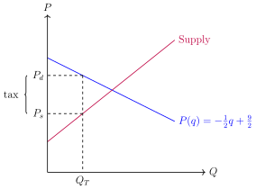
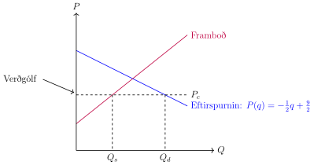
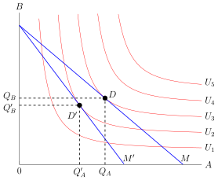
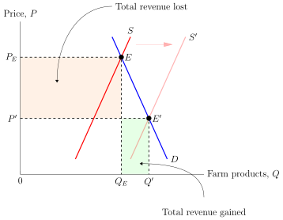
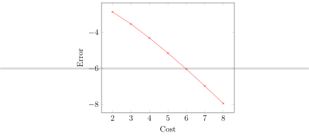
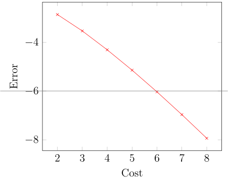
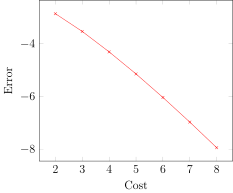

Welcome to rubiktest-projectname’s documentation by abjarna!#
Smá meira asdsadff afasf testing test. 1 + 2 = 9. Hér verður flott síða. lj lkjlkjlkj. asdf adsfasdf.
Since Pythagoras, we know that \(1+2=9\).
asdf asdfasdf asdf asdf asdf
asdf
alert('Hello, World!')
Euler’s identity, equation (1), was elected one of the most beautiful mathematical formulas.
\(\underline{x}=[ x_{1}, ..., x_{n}]^{T}\)
Setjum \(b_y=-6b_x\) inn og fáum:
Vigur sem er samsíða \(\overline{a}=(-1,6)\) og hefur lengdina 9 er því
Dæmi og lausn
Hér er dæmi og lausn
Annað dæmi og lausn sem er hægt að opna og loka
Hér er annað dæmi og lausn
Dæmi og lausn

test2.tex – lkj lkj lkj lkj lkj lkj lkjlkjlkjlkj lkj lkj lkj lk jlkj lkj lk jlkj lkj lkJ LKJ
test.tex
Verðgólf inn í RST

test2.tex

test3.tex

test4.tex
test_table.tex
test_table1.tex
test_table2.tex
test_canvas1.tex

test_canvas2.tex

test_canvas3.tex

Euler’s identity, equation (1), was elected one of the most
Header 1 |
Header 2 |
|---|---|
1 |
one |
1,5 |
test |
2 |
two |